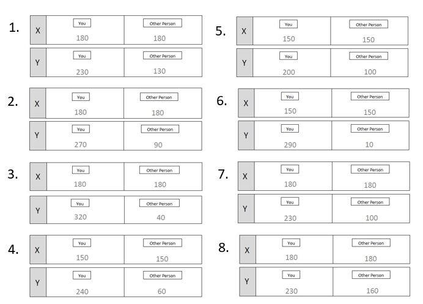
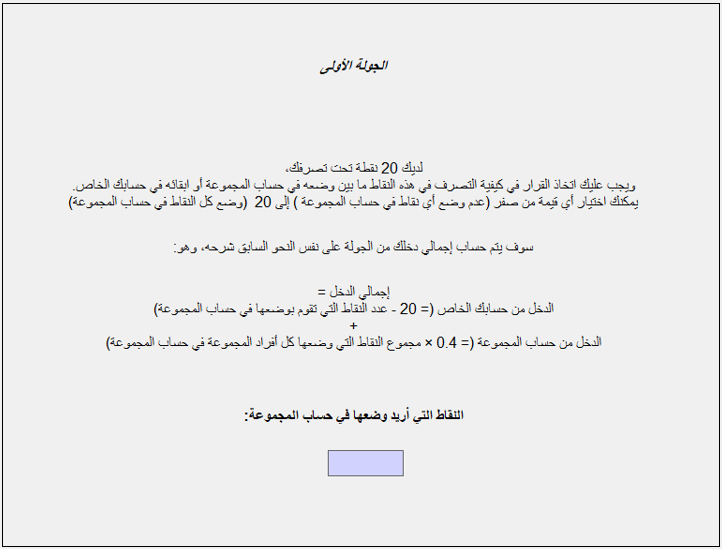
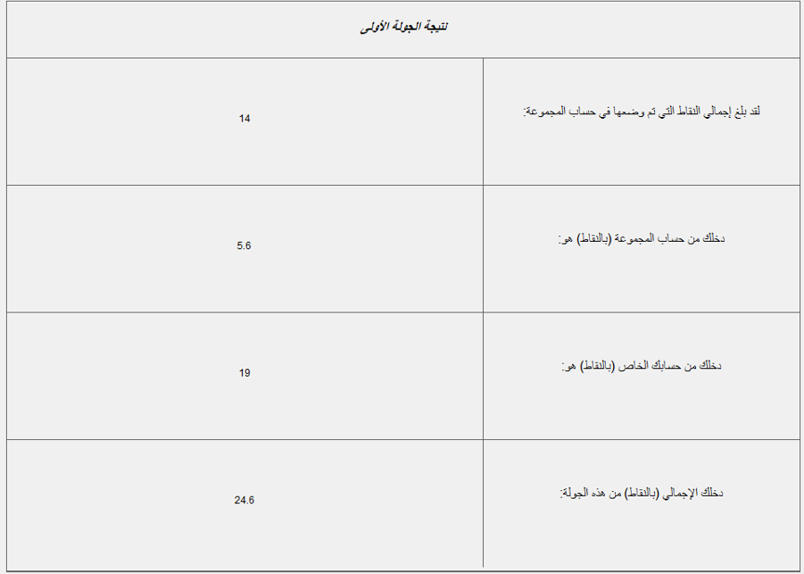
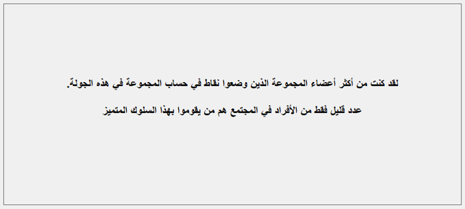

In this workshop, we will be following a non-traditional route where I will be taking you on a data analysis journey working on a real research project. We will be applying the data analysis workflow steps and throughout this journey, you will learn how to program and do analysis using R.
Desirable social norms such as altruism and cooperation have been witnessing severe deterioration in the Egyptian society lately.
Under what conditions can positive social norms evolve?
Can cooperation be primed using non-monetary incentives/triggers?
To answer these questions, we conduct an experiment measuring altruistic preferences of Egyptian subjects and cooperation in two settings: a control setting, and a treatment setting where subjects that exhibit high cooperative behaviors get a message commending their behavior.
The subjects play two games: the dictator game then a public goods game.
The dictator game is used to elicit altruistic behaviors: altruism –> egoism
Each subject acts as the proposer (i.e. dictator) and decides to give a number of points to the other player.
Eight different scenarios varying the points at stake, with two options:

The public goods game tackles the provision of a good of which no one can be excluded and when the rational choice for an individual is to free-ride.
Subjects are divided into groups of 4.
Each subject endowed with 20 points.
Choice between contributing to:
Payoff function for individual \(i\): \[ \Pi_i = (20-x_i) + 0.4 \sum_{i=1}^{N} x_i\] where \(x_i\) is the amount contributed by subject \(i\) to the group account.
Subjects play a maximum of 10 rounds. There is a 30% termination effect after the 7th round.


Treatment: after each round, the two highest contributors get the following message:
“You were amongst the group members with the largest contributions to the group account. Only a few number of people follow this distinguished behaviour”

\(H_1\): Frequency of egoistic preferences is more prevalent than altruistic ones.
\(H_2\): Altruists contribute more to the group than egoists.
\(H_3\) Highlighting a feeling of pride from being among the few cooperatives is likely to sustain high contribution.
Data files can be accessed and downloaded here
A total of 4 sessions were conducted with a total of 96 subjects: